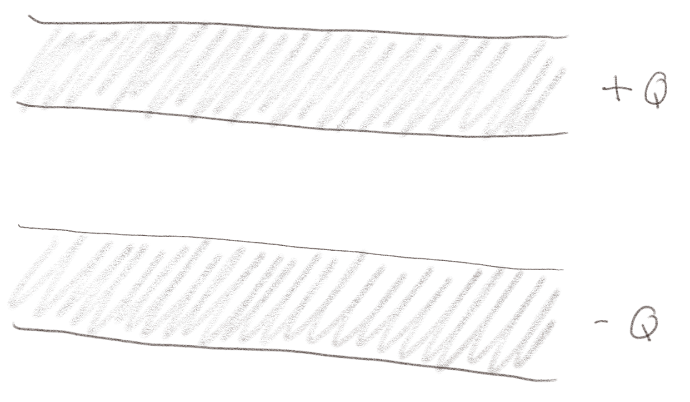
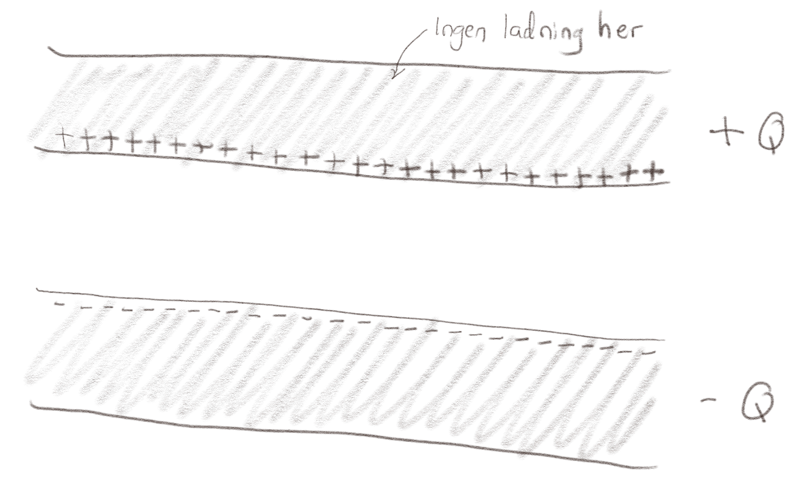
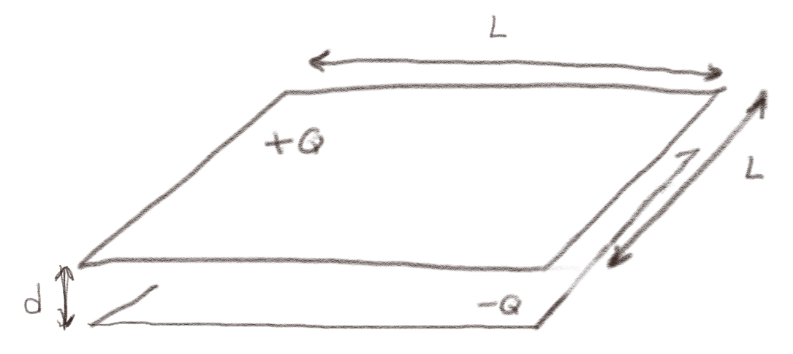
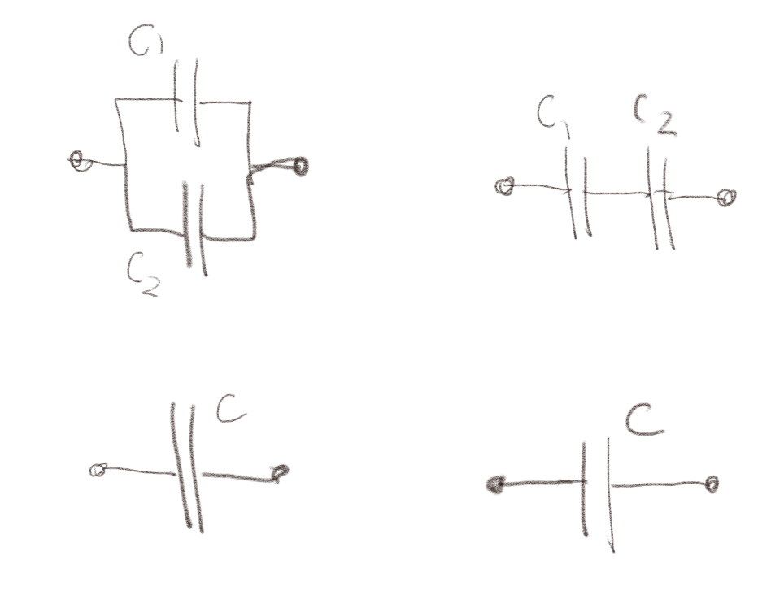
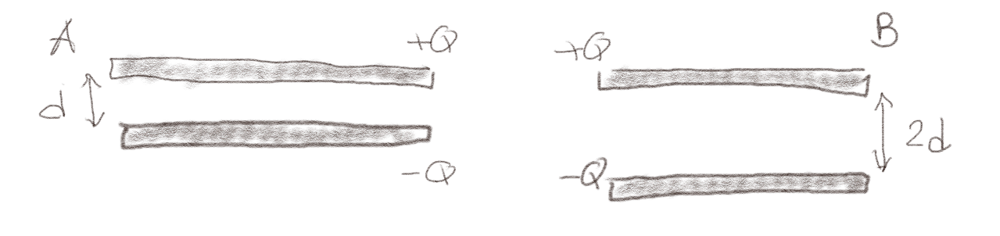
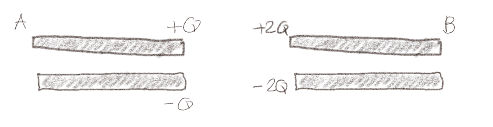

(Lærebok 7.1)
Du har bygget en kondensator med kapasitans \( C \) som består av to parallelle plater med et areal \( A \) og en avstand \( d \), og du har koblet den til et batteri med spenning \( V \).
a) Hva skjer med kapasitansen \( C \) hvis du dobler spenningen på batteriet \( V \)?
Ingenting
Det skjer ingening med kapasitansen. Den er kun avhengig av geometrien til lederne som den består av og ikke spenningen.
b) Hva blir ladningene på den positive og negative siden av kondensatoren hvis du dobler spenningen \( V \)?
\( +2Q \) og \( -2Q \)
Vi vet at \( C = Q/V \) slik at \( Q = CV \). Hvis vi dobler \( V \) betyr det at vi dobler \( Q \). Det betyr at vi da har en ladning \( +2Q \) på den positive siden av kondensatoren og en ladning \( -2Q \) på den negative siden.
c) Vi kobler batteriet fra kondensatoren. Hva er kapasitansen \( C \) til kondensatoren nå?
Det samme som før.
Det skjer ingenting med kapasitansen, så den er det samme som før. Kapasitansen er en egenskap til systemet som kun avhenger av geomtrien til systemet, ikke av spenningen eller ladningen i systemet.
(Lærebok 7.1.2)
Figuren under viser en platekondensator med to store parallelle plater av ideelle ledere. Den øvre lederen har ladningen \( +Q \) og den nedre lederen har ladningen \( -Q \). Du kan anta at platene er så store at du kan se bort fra kanteffekter.

a) Hva er det elektriske feltet rundt et uendelig stort plan i \( xy \)-planet med uniform (overflate) ladningstetthet \( \rho_s \)?
\( \vec{E} = \rho_s /(2 \epsilon_0) \z \)
Vi legger planet i \( xy \)-planet og antar at det elektriske feltet har symmetrien \( \vec{E} = E_z(z) \z \) og at \( E_z(z) = -E_z(-z) \). (Kan du forklare hvorfor?) Vi lager en Gauss-flate som fra \( z \) til \( -z \) med areal \( S \). Det er ingen fluks ut sidene i denne Gauss-flaten, det er kun fluks ut av flaten i \( z \) og \( -z \). I begge tilfeller er fluksen \( E_z(z) S \), slik at Gauss' lov gir: $$ \begin{equation} \oint_S \vec{E} \cdot \d \vec{S} = 2 E_z(z) S = Q/\epsilon_0 = \rho_s S/\epsilon_0 \tag{4} \end{equation} $$ og dermed er \( E_z = \rho_s / (2 \epsilon_0 ) \).
b) Skisser ladningsfordelingen i platene. Tenk nøye gjennom hvilke antagelser du har gjort og hvordan de tilfredsstilles av ladningsfordelingen. Diskuter gjerne med en medstudent før du ser på svaret!
Hva skal det elektriske feltet være inne i lederne?
Husk at du må summere de elektriske feltene fra alle ladningene i systemet.
Det vil oppstå en ladningstetthet på overflaten av lederne slik at det elektriske feltet inne i lederne er null. Dette kan vi få til ved at de positive ladningene er på den nederste siden av den øvre lederen og at de negative ladningene er på den øverste siden av den nedre lederen. Da vil det elektriske feltet fra begge overflatene summere til null inne i lederne, men legges sammen mellom lederne.

Figuren under viser en platekondensator med to store kvadratiske parallelle plater av ideelle ledere med sidekant \( L \). Det er en avstand \( d \) mellom de to platene. Den øvre lederen har ladningen \( +Q \) og den nedre lederen har ladningen \( -Q \). Du kan anta at platene er så store at du kan se bort fra kanteffekter.

a) Hvis vi dobler ladningen på platene fra \( Q \) og \( -Q \) til \( 2Q \) og \( -2Q \), hvordan endres kapasitansen til systemet?
Ingen endring.
Det blir ingen endring, fordi kapasitansen avhenger av geometrien til systemet og ikke av ladningen.
b) Hvis vi dobler lengden \( L \) og halverer avstanden \( d \), hva blir da endringen i kapasitans til systemet?
8 ganger større
Vi trenger å bruke at kapasitansen til systemet er \( C = A \epsilon_0 /d \) hvor \( A = L^2 \) slik at \( C = \epsilon_0 L^2 /d \). Hvis vi dobler \( L \) og halverer \( d \) betyr det at \( C = \epsilon_0 (2L)^2/(d/2)^2 = \epsilon_0 8 L^2/d \). Kapasitansen blir derfor 8 ganger større.
(Lærebok 7.2)
(Lærebok 7.3)
Figuren under viser to forskjellige sammenkoblinger av kapasitanser.

a) To kondensatorer \( C_1 \) og \( C_2 \) kobles sammen i parallell som vist til venstre i figuren. Blir den ekvivalente kapasitansen alltid større enn både \( C_1 \) og \( C_2 \), alltid mindre enn \( C_1 \) og \( C_2 \) eller har den en annen avhengighet av \( C_1 \) og \( C_2 \)?
Større enn både \( C_1 \) og \( C_2 \)
Den ekvivalente kapasitansen blir \( C = C_1 + C_2 \) som derfor blir større enn både \( C_1 \) og \( C_2 \).
b) To kondensatorer \( C_1 \) og \( C_2 \) kobles sammen i serie som vist til høyre i figuren. Blir den ekvivalente kapasitansen alltid større enn både \( C_1 \) og \( C_2 \), alltid mindre enn \( C_1 \) og \( C_2 \) eller har den en annen avhengighet av \( C_1 \) og \( C_2 \)?til systemet?
\( C \) er mindre enn både \( C_1 \) og \( C_2 \).
Den ekvivalente kapasitansen blir \( 1/C = 1/C_1 + 1/C_2 \). Det betyr at \( 1/C > 1/C_1 \) og \( 1/C > 1/C_2 \) slik at \( C < C_1 \) og \( C < C_2 \).
(Lærebok 7.4)
Figuren viser to store platekondensatorer. De har samme areal og samme ladning \( Q \), men kondensator B har dobbelt så stort gap som kondensator A.

a) Hvilken kondensator har lagret mest energi?
\( U_B > U_A \)
Vi husker at kapasitansen til en platekondensator er \( C = \epsilon_0 A/d \). Energien i en kondensator er \( U = (1/2)QV \) hvor \( C = Q/V \) og dermed \( V = Q/C \). Vi setter det inn i uttrykket for \( U \) og finner $$ \begin{equation} U = \frac{1}{2}QV = \frac{1}{2}Q \frac{Q}{C} = \frac{Q^2}{2C} \; . \tag{5} \end{equation} $$ Siden kondensator B har større gap enn kondensator A, har kondensator B mindre kapasitans enn kondensator A: \( C_B < C_A \). Siden ladningen er den samme, ser vi da at \( U_B > U_A \).
Figuren viser to store platekondensatorer. De har samme areal og like stort gap. Kondensator B har dobbelt så mye ladning som kondensator A.

b) Hvilken kondensator har lagret mest energi?
B
Kapasitansen er \( C = \epsilon A/d \) og er den samme for de to kondensatorene. Energien er at \( U = Q^2/(2C) \). Siden \( C \) er den samme, vil den kondensatoren som har størst ladning også ha størst energi. Kondensator B har størst ladning og har derfor også størst energi.
(Lærebok 7.4.3)